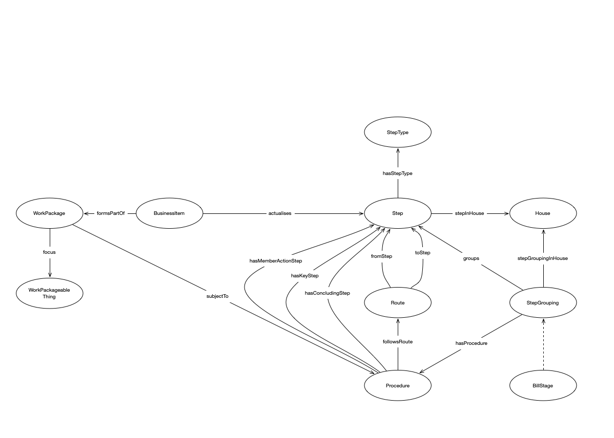

Some hopefully useful SPARQL queries to get you started.

IRI: http://parliament.uk/ontologies/procedure/BillStage
IRI: http://parliament.uk/ontologies/procedure/BusinessItem
IRI: http://parliament.uk/ontologies/procedure/BusinessStep
IRI: http://parliament.uk/ontologies/procedure/DecisionStep
IRI: http://parliament.uk/ontologies/procedure/House
IRI: http://parliament.uk/ontologies/procedure/LogicGateStep
IRI: http://parliament.uk/ontologies/procedure/LogicGateType
IRI: http://parliament.uk/ontologies/procedure/Procedure
IRI: http://parliament.uk/ontologies/procedure/Route
IRI: http://parliament.uk/ontologies/procedure/Step
IRI: http://parliament.uk/ontologies/procedure/StepGrouping
IRI: http://parliament.uk/ontologies/procedure/WorkPackage
IRI: http://parliament.uk/ontologies/procedure/WorkPackageableThing
IRI: http://parliament.uk/ontologies/procedure/actualises
IRI: http://parliament.uk/ontologies/procedure/focus
IRI: http://parliament.uk/ontologies/procedure/followsRoute
IRI: http://parliament.uk/ontologies/procedure/formsPartOf
IRI: http://parliament.uk/ontologies/procedure/fromStep
IRI: http://parliament.uk/ontologies/procedure/groups
IRI: http://parliament.uk/ontologies/procedure/hasConcludingStep
IRI: http://parliament.uk/ontologies/procedure/hasKeyStep
IRI: http://parliament.uk/ontologies/procedure/hasLogicGateType
IRI: http://parliament.uk/ontologies/procedure/hasMemberActionStep
IRI: http://parliament.uk/ontologies/procedure/hasProcedure
IRI: http://parliament.uk/ontologies/procedure/stepGroupingInHouse
IRI: http://parliament.uk/ontologies/procedure/stepInHouse
IRI: http://parliament.uk/ontologies/procedure/subjectTo
IRI: http://parliament.uk/ontologies/procedure/toStep
This HTML document was obtained by processing the OWL ontology source code through LODE, Live OWL Documentation Environment, developed by Silvio Peroni.